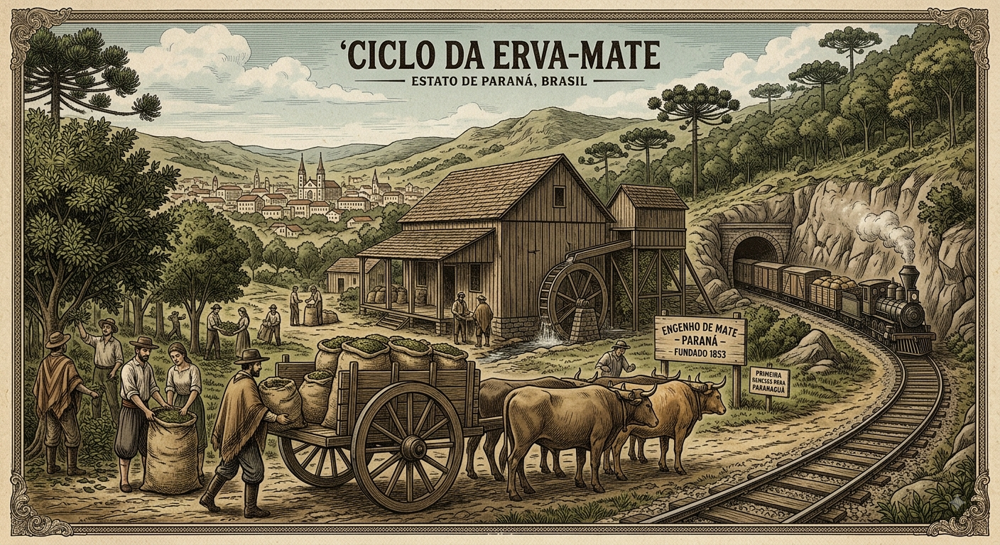
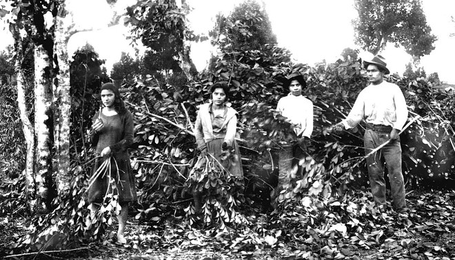
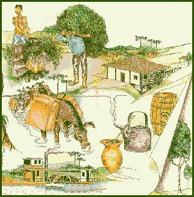
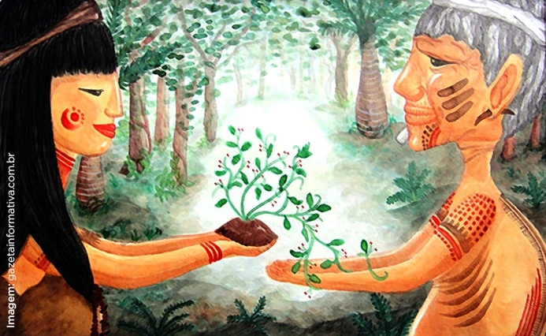
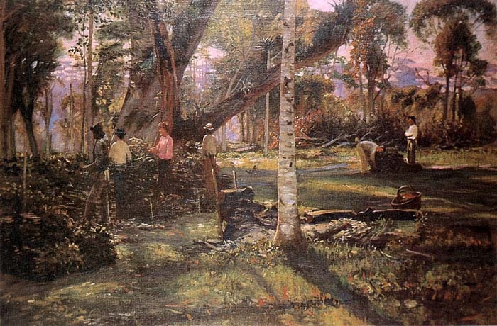
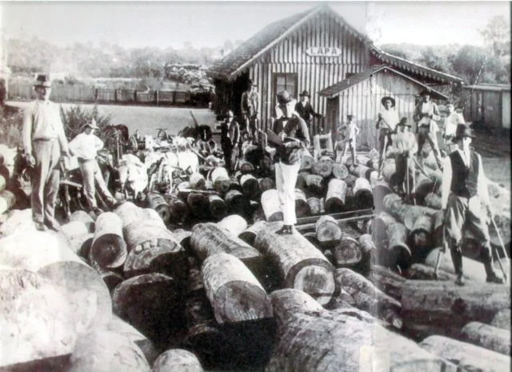

A IMPORTANCIA DA ERVA MATE DO PARANA
A história do Paraná se confunde com a da erva-mate, planta que era usada originalmente pelos povos indígenas Guaranis, Kaingangs e Xetás como bebida sagrada e medicinal. No século XIX, o consumo da erva cresceu tanto no Brasil e nos países vizinhos que os produtores locais — os chamados "Barões do Mate" — acumularam grande poder econômico. Foi essa riqueza que deu força política para a região se emancipar de São Paulo em 1853, dando origem ao estado do Paraná.

contexto historico
A história do Paraná se confunde com a da erva-mate, planta que era usada originalmente pelos povos indígenas Guaranis, Kaingangs e Xetás como bebida sagrada e medicinal. No século XIX, o consumo da erva cresceu tanto no Brasil e nos países vizinhos que os produtores locais — os chamados "Barões do Mate" — acumularam grande poder econômico. Foi essa riqueza que deu força política para a região se emancipar de São Paulo em 1853, dando origem ao estado do Paraná.

importancia cultural
A erva-mate é o verdadeiro DNA da identidade paranaense por unir as tradições indígenas, tropeiras e dos imigrantes europeus. O hábito de compartilhar o chimarrão ou o tererê consolidou um símbolo marcante de hospitalidade, igualdade e convivência comunitária no estado. Durante o movimento Paranista, a planta foi elevada a um ícone de orgulho regional e autonomia cultural. Essa força é tão profunda que o ramo de erva-mate está eternizado na bandeira e no brasão oficiais do Paraná. Hoje, a cultura ervateira permanece viva no cotidiano, na arquitetura histórica e no orgulho do povo paranaense.

curiosidades
curiosidade 1
A cidade paranaense de São Mateus do Sul possui o título oficial de Capital Nacional da Erva-Mate. Herança Indígena e Proibição Religiosa: O hábito de consumir a infusão foi herdado dos povos Guarani e Kaingang. No período colonial, jesuítas tentaram proibir o consumo por considerarem o chá uma "erva do diabo" ou feitiçaria, devido ao efeito estimulante da bebida.
O Energético Natural do Século XIX
No século XIX, os tropeiros que transportavam a erva usavam o chimarrão como um poderoso "energético natural". A planta contém mateína (um composto químico idêntico à cafeína), que ajudava a afastar o cansaço, a fome e o frio durante as longas viagens pela serra.
Memória e Patrimonios
A história da erva-mate está impressa na paisagem e na arquitetura do estado. Em Curitiba, o Palácio Garibaldi e os casarões do São Francisco exibem a riqueza dos antigos "Barões do Mate", enquanto as calçadas de petit-pavé estampam ramos da planta pela cidade. No Litoral, os casarios históricos de Antonina e Paranaguá relembram o auge do escoamento do produto para o mundo. Unindo o planalto ao porto, a Estrada da Graciosa e a Ferrovia Paranaguá-Curitiba permanecem como monumentos vivos dessa era, preservando a memória do ciclo que construiu a infraestrutura e a identidade paranaense.



Fonte: Acessar referencia